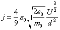

Measurements of relative speeds are performed with GNAT CE 2021 on Windows 8.1.
The Schottky Langmuir equation is used for execution time measurements because it has a rational exponents. Quaternions may be used similarly to matrices for coordinate transformations but need much more time.
For details, see the program measure.adb in directory
Examples.
Loops are used with one million repetitions.
Assertion Effect
Schottky Langmuir
Matrices and Quaternions
Before the measurements are discussed, a strange effect has to be discussed. We are interested in the speed of the checked and unchecked versions in comparison with the pure mathematics, i. e. the time consumed for the nude Schottky Langmuir equation with only floating point data.
This nude equation is compiled twice, once with Assertion Policy
set to Ignore and once set to Check.
Although the code is identical and there are no assertions, the
execution time different by an astonishing big factor.
This difference must be attributed to the executable produced by GNAT
depending on the switch -gnata, which corresponds to the
Assertion_Policy pragma.
| Assertion | Absolute | Relative |
|---|---|---|
| Ignore | 0.015771666 s | 1.00 |
| Check | 0.109398771 s | 6.94 |
In the measurements below, please take into account the distortion.
The Schottky Langmuir equation

is ideal for measurements: It has a lot of dimensioned items, a root,
and rational exponents.
The reference is the evaluation time of the nude equation,
i.e. the pure floating point version.
In contrast, the dressed version is correctly dimensioned and called with parameters dimensioned with unit strings. Unit string evaluation is time consuming and heavily depends on the complexity of the string. However, unit strings are generally only used for initialization and do not normally occur in formulas. Thus in the stringless version, the parameter unit initialization is taken out of the loop.
Last, the optimized version also precompiles the constant part outside the loop. This is what an optimizing compiler will do (in the nude version), but cannot here because of the dimension components.
These four versions are computed once with unit checking enabled and once disabled. The results are quite astonishing.
| Unchecked | Absolute | Relative | ||
|---|---|---|---|---|
| Nude | 0.015771666 s | 1.0 | ||
| Optimized | 0.167998892 s | 10.7 | 1.0 | |
| Stringless | 0.215526095 s | 13.7 | 1.3 | 1.0 |
| Dressed | 0.668961375 s | 42.4 | 4.0 | 3.1 |
| Checked | Absolute | Relative | ||
|---|---|---|---|---|
| Nude | 0.109398771 s | 1.0 | ||
| Optimized | 5.908864053 s | 54.0 | 1.0 | |
| Stringless | 6.994078595 s | 63.9 | 1.2 | 1.0 |
| Dressed | 8.570521621 s | 78.3 | 1.5 | 1.2 |
Comparing the nude and the omptimized versions in
the checked variant, you can see that the dimension
calculation makes the execution time explode.
This melts down when checking is off.
The rest must be attributed to the compiler ignoring the
Inline pragma for the operations in the dimension
signature package.
Comparing the stringless and the dressed execution times, you can see that the dimension string evaluation is extremely expensive in the unchecked version, thus be careful to only use them for data initilization and avoid them in calculations. In the checked version, this effect is smaller since the computation of the dimension components consumes most of the time, whereas in the unchecked version, only the dimension string evaluation is left.
| Nude | Optimized | Stringless | Dressed | |||||
|---|---|---|---|---|---|---|---|---|
| Unchecked | 0.015771666 s | 1.00 | 0.167998892 s | 1.00 | 0.215526095 s | 1.00 | 0.668961375 s | 1.00 |
| Checked | 0.109398771 s | 6.94 | 5.908864053 s | 35.17 | 6.994078595 s | 32.45 | 8.570521621 s | 12.81 |
Last the unchecked versus checked equations. (The Nude column is the same as above.) You again can see the big effect of suppressing the dimension checking.
As expected, quaternion rotation is much slower to matrix rotation, and even more so in the checked version.
| Matrix | Quaternion | |||
|---|---|---|---|---|
| Unchecked | 0.110371887 s | 1.0 | 0.600734540 s | 1.0 |
| Checked | 0.274695246 s | 2.5 | 2.576114086 s | 4.3 |
| Unchecked | Checked | |||
|---|---|---|---|---|
| Matrix | 0.110371887 s | 1.0 | 0.274695246 s | 1.0 |
| Quaternion | 0.600734540 s | 5.4 | 2.576114086 s | 9.4 |